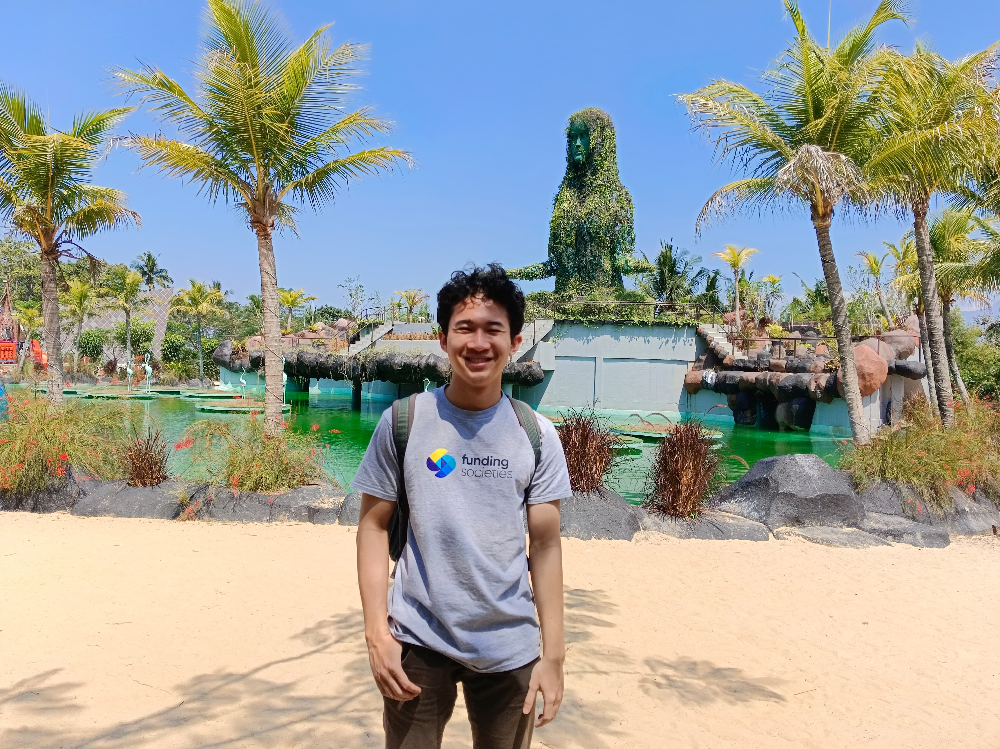

Hello, I'm
M. Farhan Dzulfikar
Computer Science Major


Hello, I'm
Computer Science Major
Get To Know More
Hello everyone, you can call me Farhan!!! I'm a Computer Science Major at Institut Teknologi Sepuluh Nopember (ITS).
Currently, I'm in my 4th semester. As a student, I have a great interest in Software Engineering and Artificial Intelligence.
I always try to develop myself and expand my real world experience by volunteering in various activities community activities.
Furthermore, I have created various personal projects to enhance my technical skills.
The projects provided me with a lot of valuable lessons and knowledge that helped me with my problem-solving skills
Currently, I am building a portfolio that showcases my works and achievements during my college years. In this portfolio, I will demonstrate my skills and potentials to the readers and potential employers.
Thank you for your time and attention. I hope to work with you in the future.